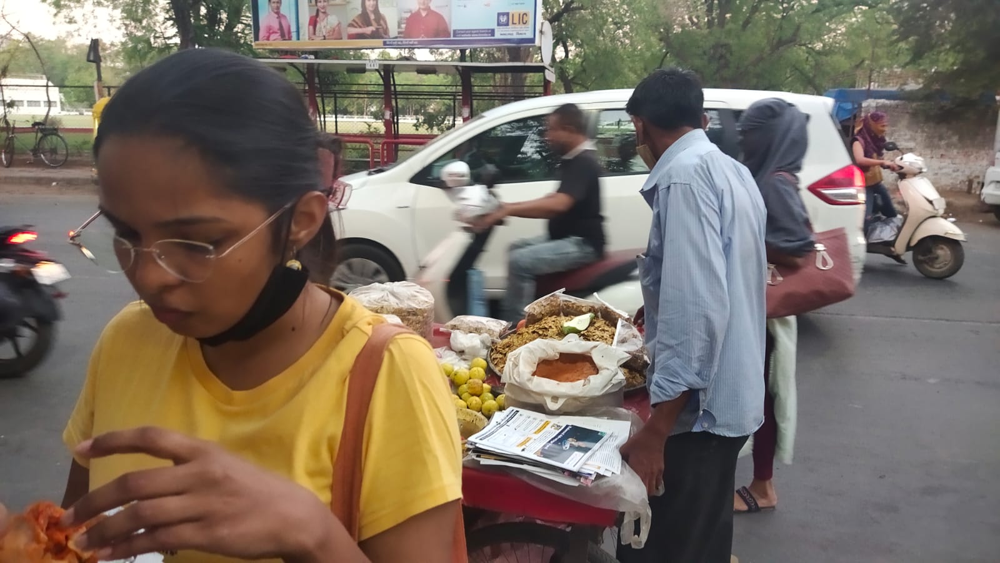
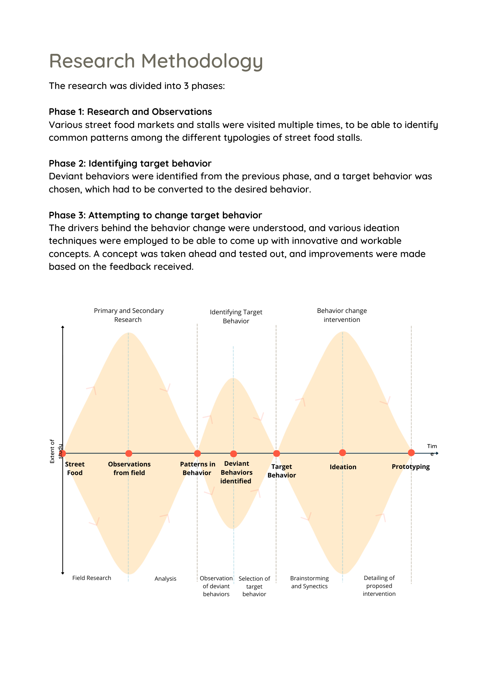
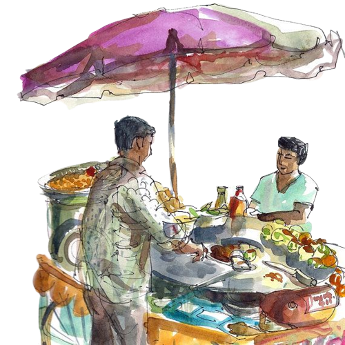
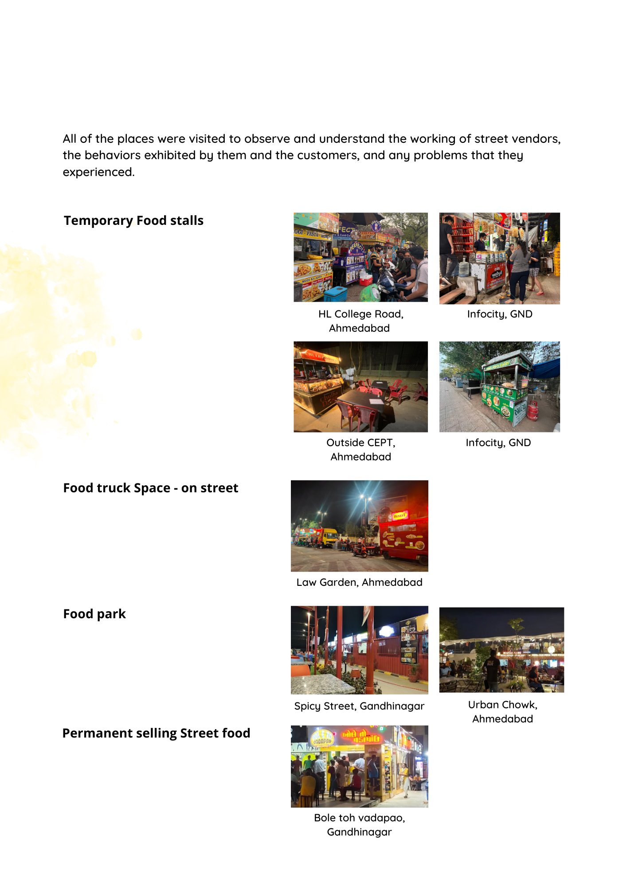

Overview
Understanding how people think, feel, and act to create designs that influence their behavior positively. Through field studies in Ahmedabad and Gandhinagar, we identified compromised hygiene as a core deviant behaviour and designed interventions using the Behaviour Change Canvas.
Objectives
Identify and implement behavior change in the context of street food in Ahmedabad and Gandhinagar, India. We aimed to understand not just the surface-level hygiene issues, but the deeper social, cultural, and environmental factors that drive vendor behaviour.

Research — 3 Phases
Phase 1: Visits to street food markets to identify patterns, map the environment, and observe vendor-customer interactions.
Phase 2: Identify deviant behaviors, choose target behavior based on impact and changeability.
Phase 3: Understand drivers, employ ideation techniques to generate and prototype interventions.
Field Observations
Ease in street food environments. Unsaid vendor unity. Cooking exhibition as crowd puller and pusher. We noticed the social dynamics at play — how vendors formed informal support networks, howulture and pride influenced how they presented their stalls, and how time pressure affected hygiene practices.

Deviant Behaviours
Core: Compromised hygiene by vendors and customers. This behaviour gives liberty for other deviancies to flourish — and creates downstream health risks at scale.
We identified handwashing (or the lack of it) as the central, highest-leverage target behaviour. Changing this one behaviour had the potential to create a cascading improvement in overall hygiene.

Design Intervention
Using the Behaviour Change Canvas, we designed an intervention that made handwashing the path of least resistance. Rather than relying on moral instruction or guilt, our approach restructured the environment to make hygiene the default, easiest, most natural choice.
The intervention considered:
- Physical placement of handwashing stations
- Visual cues at point-of-action
- Social norms reinforcement among vendor communities
- Making hygiene visible as a marker of pride and professionalism
